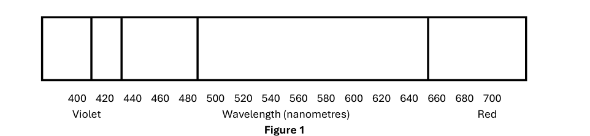
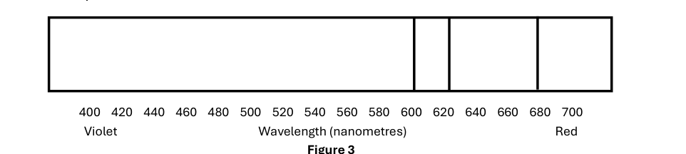
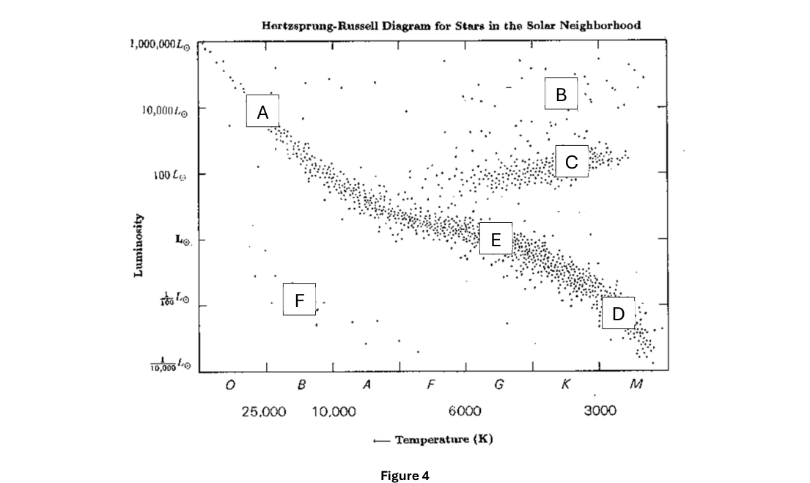

Section A: Multiple choice (10 marks)
Which of the following correctly identifies the location of the Kuiper Belt in our Solar System?
Which of the following models of the universe was developed first?
Which unit of measurement is defined as the average distance between the Earth and the Sun?
Why is the parallax method limited to measuring the distances of relatively nearby stars from Earth-based telescopes?
Star X and Star Y both have an apparent magnitude of +2.0. However, Star X has an absolute magnitude of −3.0 and Star Y has an absolute magnitude of +5.0. Which of the following is true?
X has the smaller (more negative) absolute magnitude, so it is more luminous. They look equally bright, so the more luminous star must be further away.
Which type of evidence for the Big Bang theory best matches this description: "Its abundance is too high to have been produced by stars alone, suggesting formation in a hot, dense early universe"?
According to the Big Bang theory, the universe became "transparent", allowing light to travel freely, about 300,000 years after the start of expansion. What happened at this point to allow this?
If a new measurement found that the Hubble constant (H0) was actually much higher than 70 km/s/Mpc, what would this imply about the calculated distance to a galaxy with a known recessional velocity?
d = v / H0. For the same recessional velocity, a larger H0 gives a smaller distance.
Which of the following best describes the transition of a star from the main sequence to a red giant?
A student is calculating the distance to a star with a parallax angle of 0.0354 arcseconds. He wants his answer in light-years. Which of the following steps shows an error?
1 ÷ 0.0354 = 28.25 pc (parsecs), not Mpc. The answer should be 28.25 × 3.26 = 92.1 ly.
Section B: Short answer (22 marks)
Question 1 (5 marks)
An astronomer observes a distant galaxy and finds its recessional velocity is 14,700 km/s.
Using a Hubble constant (H0) of 70 km/s/Mpc, calculate the distance to this galaxy in Mpc.
d = v ÷ H0 (1 mark) = 14 700 ÷ 70 = 210 Mpc (1 mark).
If another galaxy was observed at twice this distance, what would you expect its recessional velocity to be?
v is proportional to d, so 2 × d gives 2 × v = 29 400 km/s.
Describe Hubble's observations and state their significance for our understanding of the universe.
All distant galaxies are moving away from us, and the further away they are, the faster they recede (1 mark).
This was the first evidence of an expanding universe, which led to the Big Bang theory (1 mark).
Question 2 (4 marks)
Each element has a unique electron configuration that creates a specific pattern of spectral lines. When we observe light from stars or galaxies, these lines tell us which elements are present.
Figure 1 shows the hydrogen absorption spectrum as it appears from a stationary source (like our Sun).

Describe (or sketch on paper) how the same hydrogen lines would appear if they were observed from a galaxy moving away from Earth at high speed.
- The lines keep the same spacing (pattern) as in Figure 1 (1 mark).
- All the lines are shifted right, towards the red end (longer wavelengths): a redshift (1 mark).
An astronomer observes the spectrum of a very distant galaxy. Figure 3 shows a sample of what she detects.

Explain why the distant galaxy has fewer visible lines than the local star (Figure 1).
A large distance means a large redshift (1 mark). Some lines are redshifted into the infrared, so they are no longer in the visible spectrum and are not detected (1 mark).
Question 3 (3 marks)
One possible end of the universe is the Big Crunch. Assuming the Big Crunch were to occur, use your understanding of the evidence for the Big Bang to explain one piece of evidence that future astronomers could use to show that the Big Crunch was happening.
Evidence: blueshift of distant galaxies (1 mark).
Explanation: during the Big Crunch, the universe would be contracting (1 mark), so all galaxies would have their light blueshifted, as they would be moving towards the observers (1 mark).
Question 4 (10 marks)
Use the Hertzsprung–Russell diagram in Figure 4 to answer the following questions.

State the process that stars A, D and E have in common.
Fusion of hydrogen to form helium in the core (they are all main sequence stars).
Explain how we know the stars labelled B must be very large stars.
Stars in region B are very cool (1 mark) but very bright (1 mark), so they must be very large.
Explain whether the stars in region A or in region D have more mass.
A (1 mark).
A faster rate of fusion is needed for a star to be hotter, as in region A (1 mark).
Stars in region A achieve this with more mass, which increases the core pressure and temperature (1 mark).
Explain whether the stars in region A or in region D live longer as main sequence stars.
D (1 mark).
To live longer, a star must fuse at a slower rate (1 mark).
Stars in region D are cooler and smaller, so they fuse more slowly and live longer (1 mark).
Using the letters in the HR diagram, state the life-cycle stages, in order, for a star like the Sun: → →
Main sequence (E) → red giant (C) → white dwarf (F).